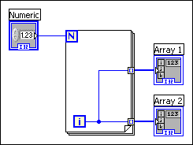
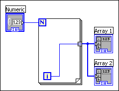

Because LabVIEW creates tunnels as you wire, tunnels sometimes overlap. Overlapping tunnels do not affect the execution of the block diagram, but they can make editing difficult because it can be hard to tell which tunnel belongs to which wire path.
If tunnels overlap, move one tunnel to expose the other. You also can remove all the wires from a tunnel to remove the tunnel and then rewire the structure correctly.
If you must wire from an object inside a structure to an object outside the structure and the object inside the structure already has a wire that passes data outside the structure, do not wire through the structure again, as shown in the following block diagram.

Instead, begin the second wire at the tunnel, shown as follows.

In a Case structure, overlapping tunnels might appear wired in each case.